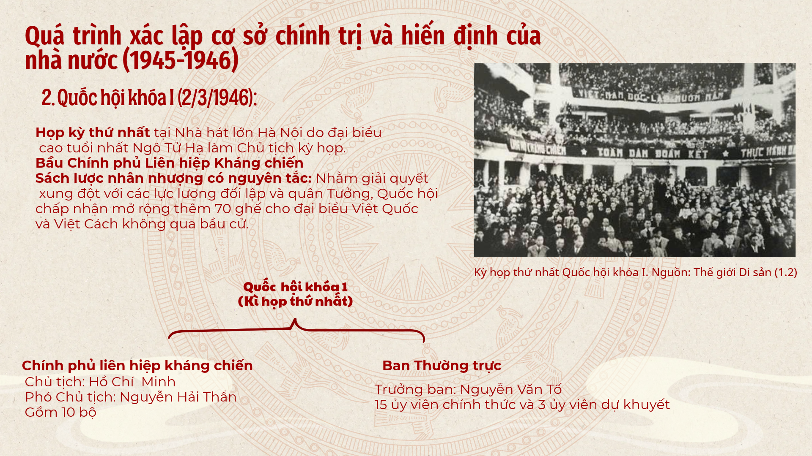
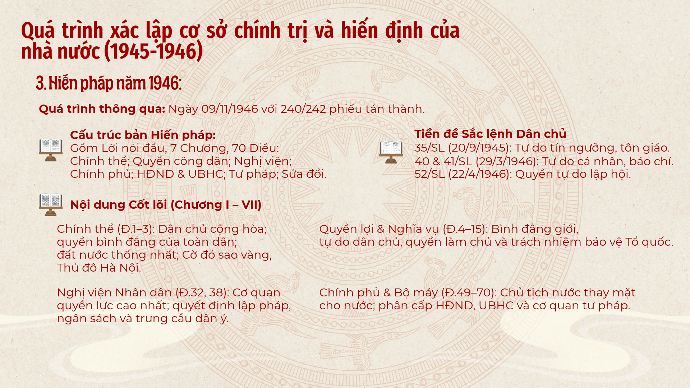
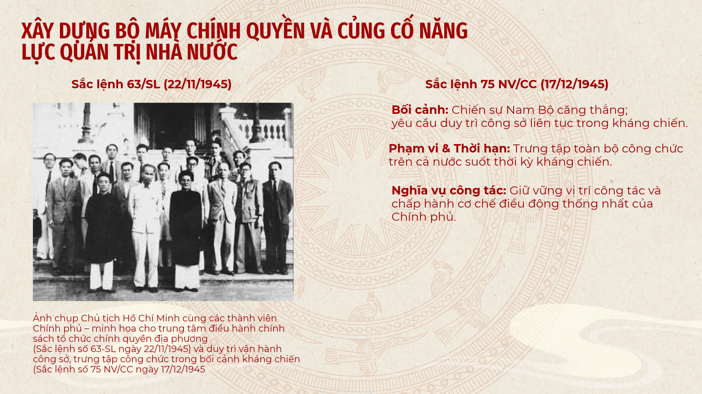
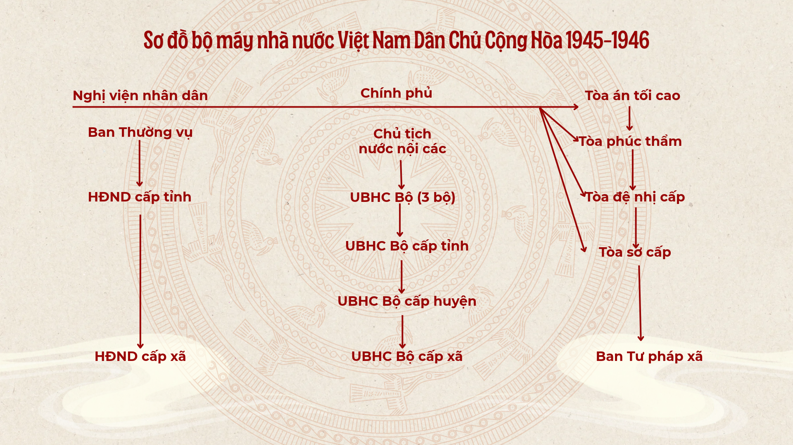
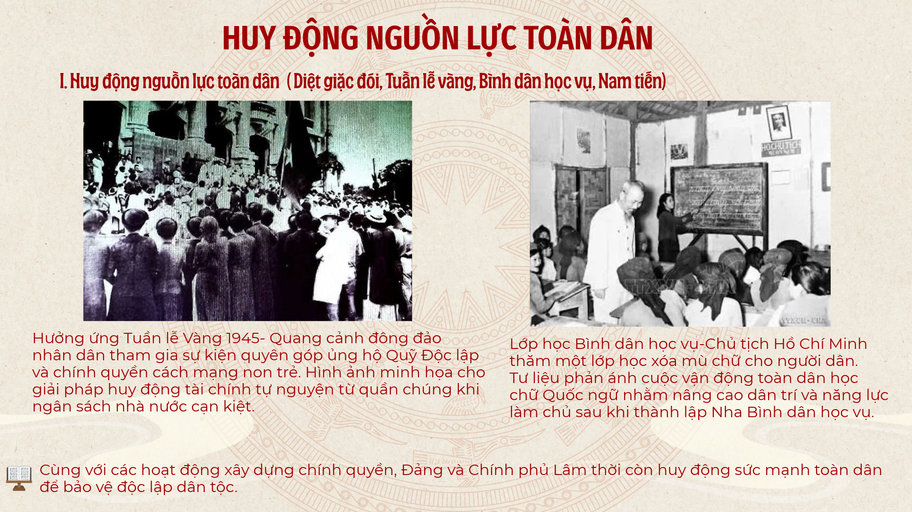
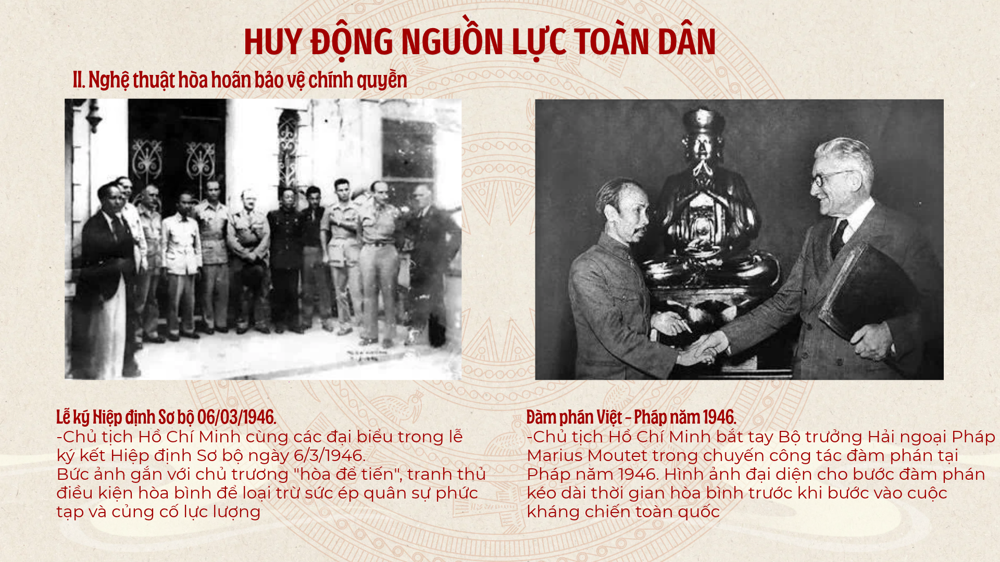
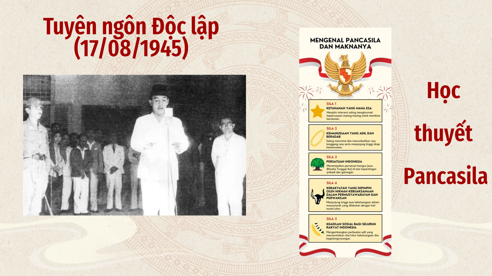
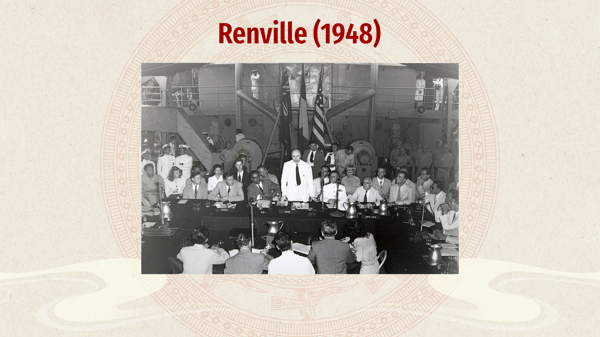
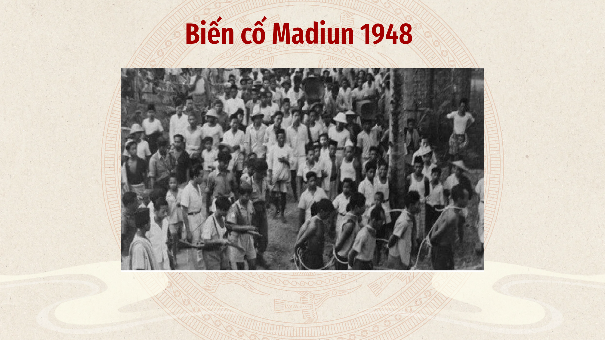

Kiến Tạo Thể Chế Hợp Hiến, Huy Động Toàn Dân & Nghệ Thuật Ngoại Giao
Chỉ trong 16 tháng đầu tiên giữa tình thế “ngàn cân treo sợi tóc”, Nhà nước Việt Nam Dân chủ Cộng hòa đã hoàn tất tiến trình lập hiến từ Trung ương xuống cơ sở, huy động sức dân và giữ vững chủ quyền.

Tổng tuyển cử Phổ thông đầu phiếu & Quốc hội khóa I
Bầu 333 đại biểu đại diện khối đại đoàn kết, chuyển hóa bộ máy lâm thời thành Chính phủ hợp hiến chính thức.

Hiến pháp năm 1946 — Bản Hiến pháp đầu tiên
Khẳng định chủ quyền thuộc về nhân dân và tính thống nhất bất khả phân của lãnh thổ Trung – Nam – Bắc.

Sắc lệnh 63-SL & 75 NV/CC: Thiết lập bộ máy quản trị
Cụ thể hóa chính quyền địa phương hai thiết chế (HĐND – UBHC) và kỷ luật công vụ thời chiến.

Sơ đồ bộ máy nhà nước Việt Nam Dân chủ Cộng hòa
Thể hiện cấu trúc phân tầng liên thông giữa Nghị viện nhân dân – HĐND, Chính phủ – UBHC các cấp và hệ thống Tòa án tư pháp.

Diệt giặc đói, Tuần lễ vàng, Bình dân học vụ & Nam tiến
Huy động 370 kg vàng, xóa mù chữ cho 2,5 triệu người, đẩy lùi nạn đói và chi viện các chi đội Nam tiến bảo vệ Tổ quốc.

Sách lược “Hòa để tiến”: Hiệp định Sơ bộ & Tạm ước 1946
Loại bớt kẻ thù, đẩy nhanh 20 vạn quân Tưởng về nước và kéo dài thời gian hòa bình chuẩn bị kháng chiến.
| Bình diện đối chiếu | Giai đoạn 1858–1945 (Thuộc địa nửa phong kiến) | Giai đoạn 1945–1946 (Nền Dân chủ Cộng hòa) | Bản chất sự chuyển biến | Chi tiết |
|---|---|---|---|---|
| 1. Hình thức tổ chức | Cấu trúc phân liệt (“chia để trị” Bắc – Trung – Nam Kỳ dưới Liên bang Đông Dương); chuyên chế, phi hiến, cai trị bằng mật thám và nhà tù. | Chính thể Cộng hòa Dân chủ thống nhất; Tổng tuyển cử (06/01/1946), Hiến pháp 1946 khẳng định lãnh thổ bất khả phân; chính quyền địa phương theo Sắc lệnh 63-SL. | Chuyển từ mô hình cai trị thực dân phân liệt, chuyên chế sang nhà nước công quyền đơn nhất, hợp hiến và dân chủ nhân dân. | |
| 2. Tư tưởng chính trị | Khủng hoảng ý thức hệ phong kiến – tư sản cũ; thực thi chính sách “ngu dân” khiến hơn 90% dân số mù chữ. | Tư tưởng Độc lập dân tộc gắn với Chủ quyền nhân dân (Điều 1 Hiến pháp 1946); cán bộ là “công bộc của dân”; ngoại giao “hòa để tiến”. | Chuyển từ nô dịch thuộc địa sang tư tưởng chủ quyền nhân dân, pháp chế dân chủ và phát triển dân trí. | |
| 3. Lực lượng xã hội | Xã hội phân hóa sâu sắc, đa số nhân dân bị tước đoạt quyền chính trị và bầu cử. | Khối Đại đoàn kết toàn dân (Mặt trận Việt Minh, Hội Liên Việt); quyền bầu cử bình đẳng từ tuổi 18 không phân biệt giới tính, dân tộc, tôn giáo. | Chuyển từ quần chúng bị trị thành công dân bình đẳng, chủ thể tối cao của quyền lực nhà nước. | |
| 4. Năng lực quản trị | Quản trị bóc lột dựa trên độc quyền thuế muối, rượu, thuốc phiện; bất lực trước khủng hoảng dẫn tới nạn đói 1944–1945. | Thể chế hóa thần tốc (Sắc lệnh 67 cứu tế, Sắc lệnh 75 NV/CC trưng tập công chức); lưu hành tiền Việt Nam, xóa mù chữ hơn 2,5 triệu người. | Chuyển từ hành chính bóc lột, quan liêu sang quản trị hành chính – kiến tạo, linh hoạt và phục vụ an sinh. |
Việt Nam (1945–1946) và Cộng Hòa Indonesia (1945 Trở Đi)
Cùng tuyên bố độc lập vào mùa thu năm 1945 sau Thế chiến II, hai quốc gia tiêu biểu của Đông Nam Á đã giải quyết bài toán tính chính danh, thiết chế nhà nước và chống tái chiếm thực dân theo những quỹ đạo đặc thù.

Học thuyết Pancasila & Bài toán “Thống nhất trong đa dạng”
Nền tảng tư tưởng dung hòa các xu hướng chính trị – tôn giáo trên quần đảo hàng nghìn hòn đảo.

Đấu tranh chống liên bang hóa & Vận động quốc tế
Giằng co bảo vệ Nhà nước thống nhất (NKRI) qua các hiệp định ngừng bắn và diễn đàn Liên Hợp Quốc.

Phép thử đoàn kết nội bộ: Việt Minh vs Quần đảo Indonesia
So sánh mức độ gắn kết lãnh thổ và đồng thuận xã hội giữa hai quốc gia hậu Thế chiến II.
| Tiêu chí so sánh | Việt Nam Dân chủ Cộng hòa (1945–1946) | Cộng hòa Indonesia (1945–1949) |
|---|---|---|
| 1. Nền tảng tư tưởng lập quốc & Tính chính danh | Độc lập dân tộc gắn với quyền làm chủ của nhân dân; củng cố tính chính danh qua Tuyên ngôn 02/09/1945, Tổng tuyển cử 06/01/1946 và Hiến pháp 1946. | Học thuyết Pancasila (5 nguyên tắc, cô đọng thành 3 nguyên tắc) dung hòa các khuynh hướng dân tộc thế tục, Hồi giáo và cánh tả; Tuyên ngôn 17/08/1945. |
| 2. Mô hình bộ máy & Thiết chế hiến định | Nhà nước đơn nhất, thống nhất Trung – Nam – Bắc; phân định phối hợp giữa Nghị viện nhân dân, Chủ tịch nước, Chính phủ và HĐND – UBHC các cấp. | Hiến pháp 18/08/1945 tập trung quyền hành pháp vào Tổng thống; chịu sức ép liên bang hóa (RIS 1949) từ Hà Lan trước khi trở lại nhà nước đơn nhất năm 1950. |
| 3. Sách lược với thực dân cũ & Đối lập nội bộ | Chủ động “hòa để tiến” (Hiệp định Sơ bộ 06/03/1946, Tạm ước 14/09/1946) đẩy 20 vạn quân Tưởng; hòa giải, mở rộng ghế Quốc hội cho Việt Quốc, Việt Cách. | Kết hợp đấu tranh vũ trang và thương lượng (Linggadjati 1947, Renville 1948, ranh giới Van Mook), đưa vấn đề ra LHQ; nội bộ nổ ra xung đột Madiun (1948) và ly khai Darul Islam. |
| 4. Huy động toàn dân & Đoàn kết dân tộc | Kế thừa truyền thống quốc gia – dân tộc thống nhất từ sớm; quy tụ toàn dân qua Mặt trận Việt Minh và Hội Liên Việt từ cứu đói, xóa mù chữ đến kháng chiến. | Không gian quần đảo đa sắc tộc, ngôn ngữ; bồi đắp gắn kết qua tinh thần Bhinneka Tunggal Ika, tiếng Bahasa Indonesia, quân đội và thanh niên Pemuda. |
Danh Mục Tài Liệu Lưu Trữ & Công Trình Nghiên Cứu
Toàn bộ luận điểm và hiện vật số trong triển lãm được đối chiếu từ hệ thống văn bản pháp quy lưu trữ quốc gia và các chuyên khảo sử học trong nước, quốc tế.
A. Tư liệu lưu trữ sơ cấp & Văn bản pháp quy
- Chính phủ Lâm thời nước VNDCCH (1945), Sắc lệnh số 14-SL (08/09/1945) & Sắc lệnh số 51-SL (17/10/1945) về Tổng tuyển cử bầu Quốc hội.
- Chính phủ Lâm thời nước VNDCCH (1945), Sắc lệnh số 17-SL (08/09/1945) về đặt ra Bình dân học vụ trong toàn cõi Việt Nam.
- Chính phủ Lâm thời nước VNDCCH (1945), Sắc lệnh số 63-SL (22/11/1945) về tổ chức Hội đồng nhân dân và Ủy ban hành chính các cấp (TTLTQG III, Phông Phủ Thủ tướng, Hồ sơ 01, tờ 97–108).
- Chính phủ Lâm thời nước VNDCCH (1945), Sắc lệnh số 67 (28/11/1945) & Sắc lệnh số 75 NV/CC (17/12/1945) về cứu tế và trưng tập công chức thời chiến (TTLTQG III, tờ 114, 124).
- Quốc hội nước VNDCCH (1946), Hiến pháp nước Việt Nam Dân chủ Cộng hòa năm 1946.
- Arsip Nasional Republik Indonesia (ANRI), Proklamasi Kemerdekaan Indonesia (17/8/1945) & Undang-Undang Dasar Negara Republik Indonesia (1945).
- UN Security Council (1948), Resolutions 41 (S/RES/41) & 55 (S/RES/55) [The Indonesian Question].
B. Giáo trình, Chuyên khảo & Bài báo khoa học
- Đinh Xuân Lâm (Chủ biên) (2017), Lịch sử Việt Nam, Tập III: Từ 1858 đến 1945, NXB Đại học Quốc gia Hà Nội.
- Đinh Thị Thu Cúc (2017), Lịch sử Việt Nam, Tập 10: Từ năm 1945 đến năm 1950, NXB Khoa học Xã hội, Hà Nội.
- Lê Mậu Hãn (Chủ biên) (2017), Lịch sử Việt Nam, Tập IV: Từ 1945 đến 2005, NXB Đại học Quốc gia Hà Nội.
- Đảng Cộng sản Việt Nam (2000), Văn kiện Đảng toàn tập, Tập 8 (1945–1947), NXB Chính trị quốc gia, Hà Nội.
- Trần Văn Giàu (1997), Sự phát triển của tư tưởng ở Việt Nam từ thế kỷ XIX đến Cách mạng Tháng Tám, NXB Chính trị quốc gia.
- Lương Ninh (Chủ biên) (2005), Lịch sử Đông Nam Á, NXB Giáo dục, Hà Nội.
- David G. Marr (1971), Vietnamese Anticolonialism, 1885–1925; (2013), Vietnam: State, War, and Revolution (1945–1946), University of California Press.
- Adrian Vickers (2013), A History of Modern Indonesia, Cambridge University Press; Harry Poeze & Henk Schulte Nordholt (2024), Merdeka, Amsterdam University Press.